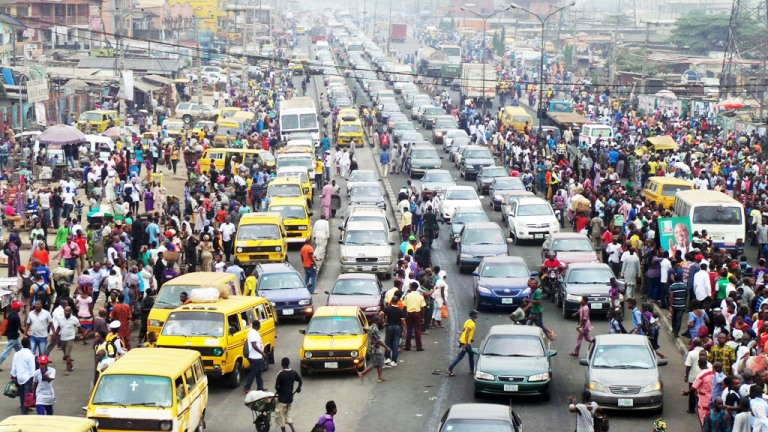
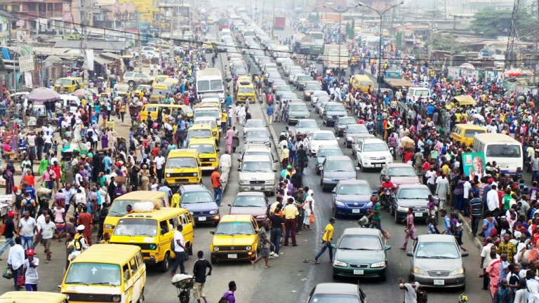
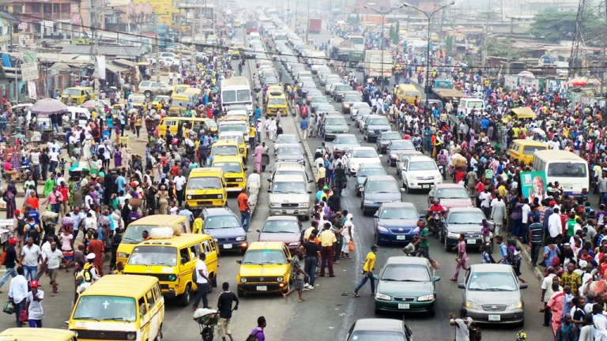

Plann your traffic ahead
Select an area here
 

Location
Here is the current status of your selcted area
Traffic status
Here is the current status of your selcted area
This page is intended to help you prepare your trip in advance and it is intended to help you be aware of the current road situation.
Being aware of the current road situation, you will know exactly what to do so you plan well your day as you are driving or going out

Here is the current status of your selcted area
Here is the current status of your selcted area